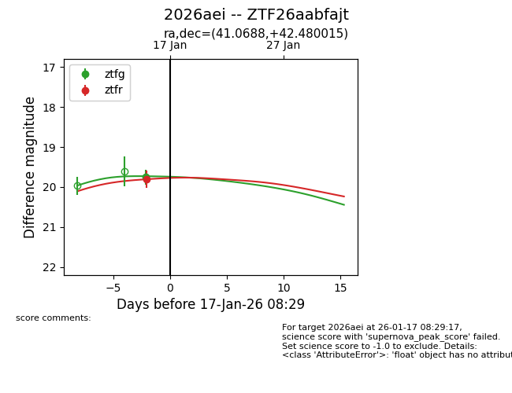
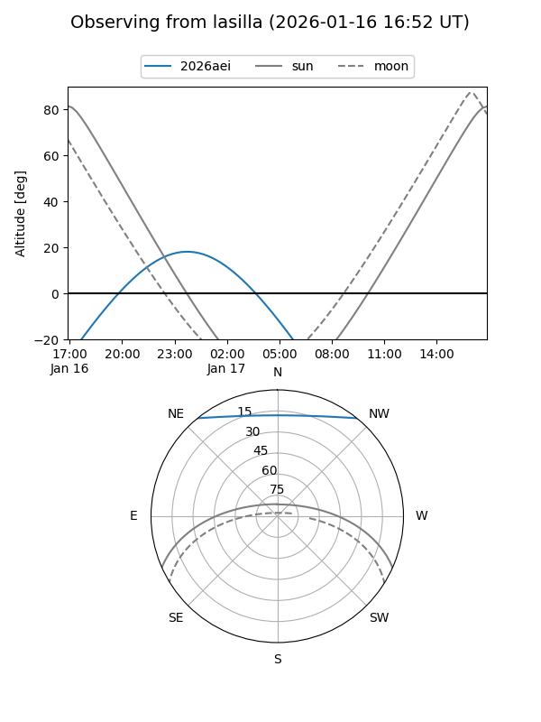
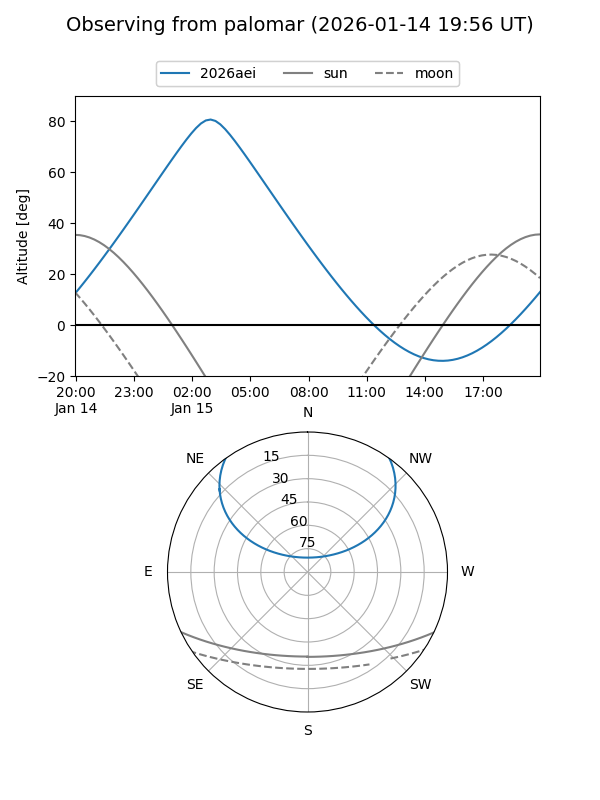
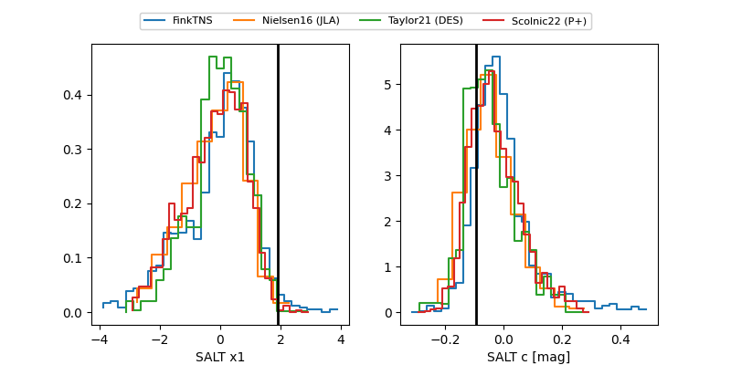

2026aei
Target 2026aei at 2026-01-15 09:25
Aliases and brokers:
FINK: link
Lasair: link
ALeRCE: link
TNS: link
YSE: link
alt names
ZTF26aabfajt (ztf,fink_ztf)
2026aei (tns,yse)
Coordinates:
equatorial (ra, dec) = 41.0688,+42.48001
equatorial (HMS+DMS) = 02:44:16.50,+42:28:48.05
galactic (l, b) = (144.1621,-15.69264)
Flags:
Photometry:
last ztfg=19.75, ztfr=19.81
1 ztfg, 1 ztfr detections
Lightcurve

Visibility


Additional plots
